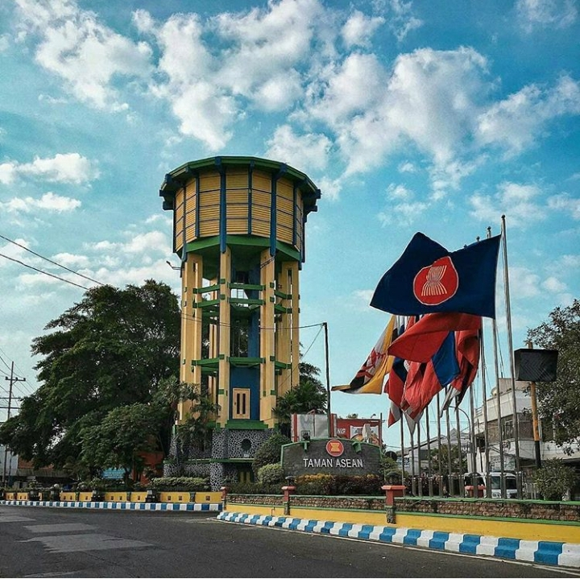
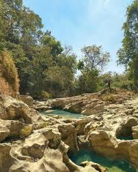
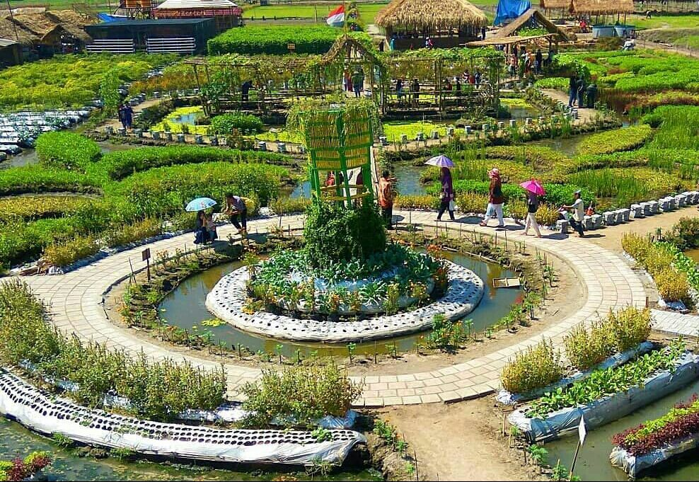
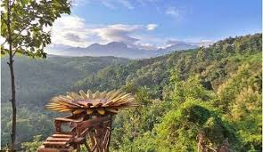
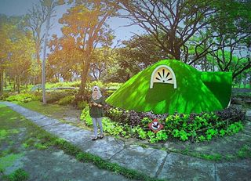
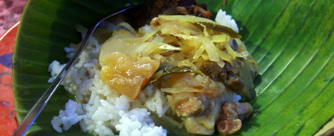
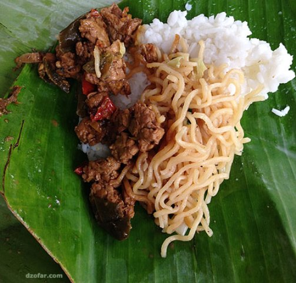
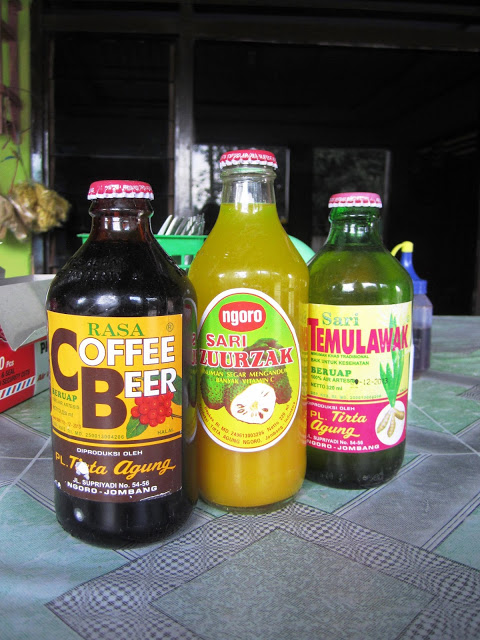
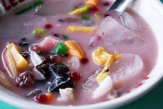

JOMBANG
Kabupaten Jombang adalah sebuah kabupaten yang terletak di bagian tengah Provinsi Jawa
Timur. Luas wilayahnya 1.159,50 km², dan jumlah penduduknya 1.201.557 jiwa (2010), terdiri
dari 597.219 laki-laki, dan 604.338 perempuan.
Jombang juga dikenal dengan sebutan Kota Santri, karena banyaknya sekolah pendidikan
Islam (pondok pesantren) di wilayahnya.
Konon, kata Jombang merupakan akronim dari kata berbahasa Jawa yaitu ijo (Indonesia:
hijau) dan abang(Indonesia: merah). Ijo (hijau) mewakili kaum santri (agamis), dan abang
(merah) mewakili kaum abangan (nasionalis/kejawen). Kedua kelompok tersebut hidup
berdampingan, dan harmonis di Kabupaten Jombang. Bahkan kedua elemen ini digambarkan
dalam warna dasar lambang daerah Kabupaten Jombang.


Kedung Cinet
Pojok Klitih, Plandaan, Tanggungan, Klitih, Plandaan, Kabupaten Jombang, Jawa Timur 61456

Taman Ponggok
Banjar Sari, Bandar Kedung Mulyo, Kabupaten Jombang, Jawa Timur 61462
Air Terjun Grenjeng
Desa Jenisgelaran, Kecamatan Bareng, Kabupaten Jombang, Propinsi Jawa Timur, Indonesia.
Bale Tani
Jalan Dokter Soetomo, Serning, Banjaragung, Bareng, Kabupaten Jombang, Jawa Timur 61474

Goa Jepang
Unnamed Road, Kedunglumpang, Mojoagung, Jombang Regency, East Java 61482

Bulu View
Segolo-golo Eco Park, Area Sawah/Kebun, Panglungan, Wonosalam, Kabupaten Jombang, Jawa Timur 61476

Bukit Teletubbies
Keplaksari, Peterongan, Nglungge, Keplaksari, Peterongan, Kabupaten Jombang, Jawa Timur 61481

Kikil Jombang
Untuk kikil khas Jombang ini pada dasarnya hampir sama dengan kikil yang dibuat pada umumnya. Bedanya adalah pada bumbu yang dibuat. Pada kikil khas Jombang ini disusun menggunakan bumbu khas dan juga santan. Menyesuaikan cita-cita menjadi lebih nikmat dan menggugah selera kompilasi dinikmati. Kikil khas Jombang ini disajikan dengan tempe kering atau tahu, menggunakan sayur bung dan empal daging yang dibacem.

Sego Sadukan
Untuk sego sadukan sendiri merupakan nasi sekepal dilengkapi dengan lauk tahu tempe yang sudah dalam bentuk irisan, dilengkapi mie dan ada tambahan teri. Sadukan itu sendiri memiliki makna tendangan. Sebutan yang unik ini juga membuat makanan khas ini mengundang rasa penasaran. Dengan isinya yang terbilang minimalis, maka sekali santap akan langsung habis.

Bir Halal Khas Jombang
Minuman ini ada beberapa varian rasa yaitu temulawak, coffee, dan sirsak yang semuanya berkarbonasi dan tentunya ini adalah minuman halal.

Es Lodeh
Es lodeh merupakan salah satu kekayaan kuliner khas Jombang yang berupa minuman. Bentuk dan sajiannya tak ubahnya es campur ataupun es oyen, yang membedakan hanya pada es lodeh ini ada rasa manis dan pedasnya.